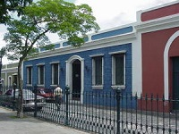

Ovidio J. Luces M.
About Me
My name is Ovidio J. Luces, I was born in 1975 in Ciudad Bolívar, Venezuela. I still live in Ciudad Bolívar, and I currently work at the Universidad de Oriente as a Systems Programmer for several years now. I served in a rule mission in 1994, in the Maracaibo - Venezuela mission, it was a very special time where I was able to learn a lot about the gospel and I was able to teach many people. In 2013 I obtained a Bachelor's degree in Administration with a mention in Computer Science. Now I am still a student to update my knowledge.
Ciudad Bolivar - Venezuela

Ciudad Bolívar is one of the cities in the country that holds the most history within its streets, plazas, and museums. Formerly known as Angostura, due to its location at one of the narrowest points of the mighty Orinoco River, it was the site of several battles and one of the first areas in the country to be liberated from the Spanish during the War of Independence. In 1818, Simón Bolívar named Angostura the provisional capital of the republic, and it was there that the Liberator delivered his famous "Angostura Address" on February 15, 1819, in which he renounced the absolute powers that had been granted to him and outlined his vision for the new republic that was being established.